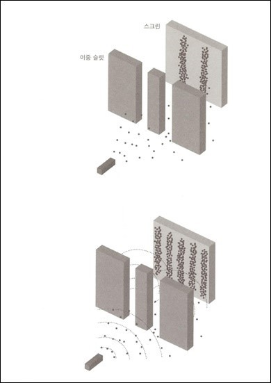

전자슬릿실험: 영국의 물리학자 토마스 영이 하였던 실험이다. 그는 전자대신 빛을 이용하여 실험을 하였다.
실험내용은 두 개의 슬릿을 향해 전자를 발사해보았을 때, 뒤에있는 스크린에 무슨 모양이 나타나는지를 관찰하는 실험이였다.
이 실험결과 계속 관찰하니, 전자를 발사한 곳에서 간섭무늬가 생겼다. 만약 전자가 입자였다면, 스크린에는 두 줄이 있어야
한다.(두 곳이 뚫려있으니 당연한 것이다.) 하지만 실험 결과는 간섭무늬가 발생하였다. 파동이였다는 것이다. 하지만, 전자가
진행하는 모습을 계속 관찰해보니 간섭무늬가 생기지 않았다.

이 이유는 훗날 막스보른에 의해 해석된다.